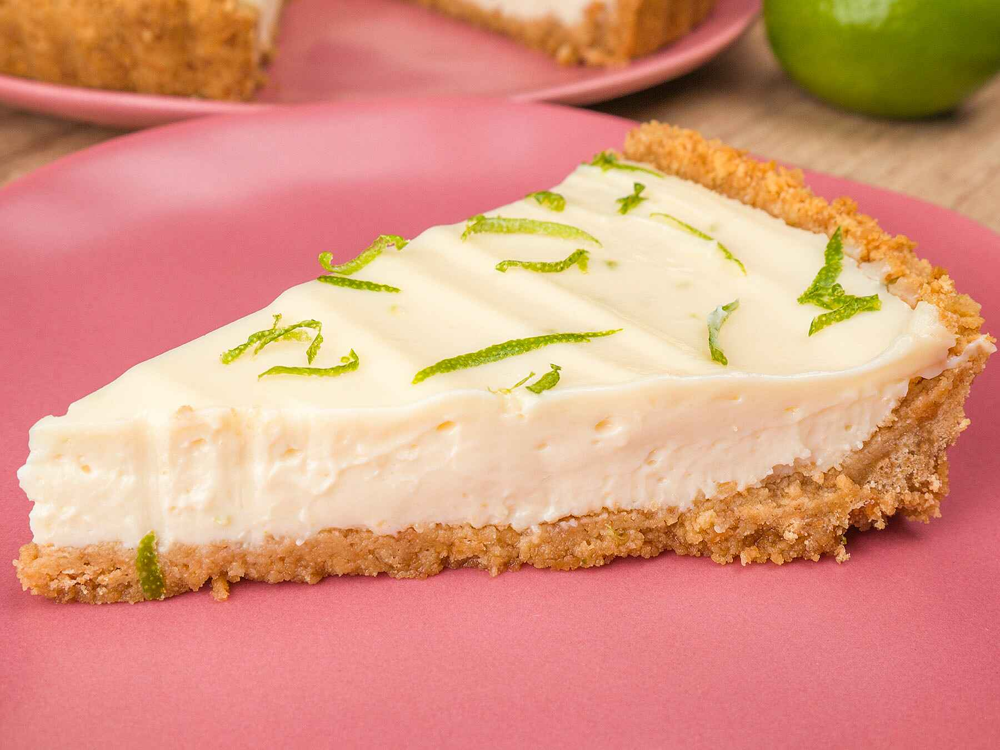
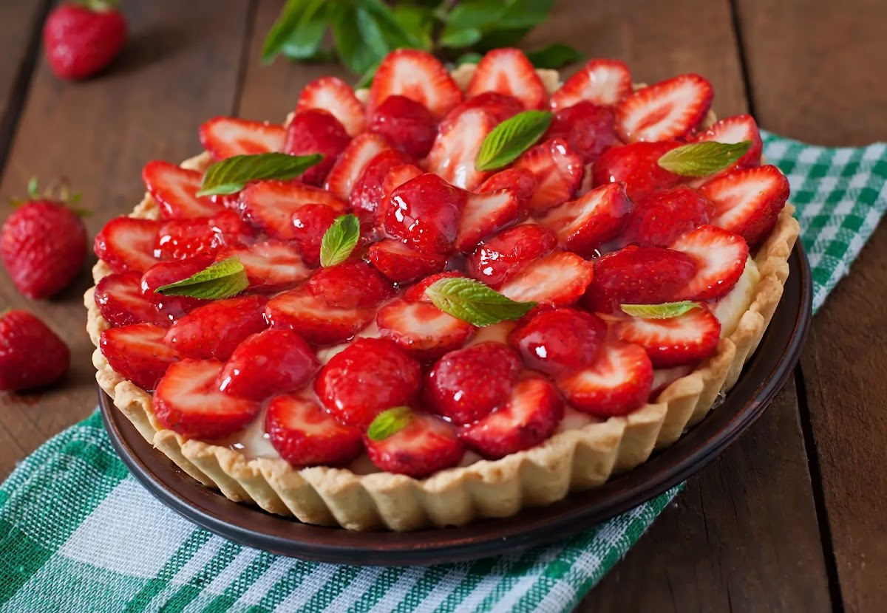
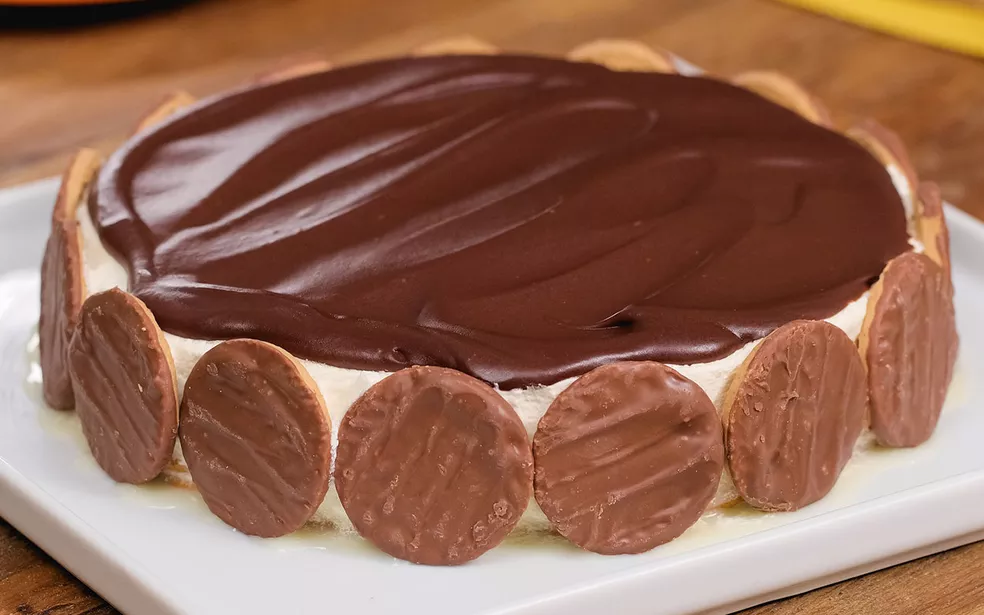

Torta de Limão
A torta de limão é uma sobremesa muito amada por todo mundo! Por ser bem equilibrada, a torta de limão é um doce perfeito para quem não gosta de sobremesas extremamente doces. Além disso, é prática, rápida e simples de fazer.
Ingredientes 🍋
- Massa
- 200 g de biscoito de maisena
- 150 g de margarina
- Recheio
- 1 lata de leite condensado (395 g)
- 1 caixa de creme de leite (200 g)
- suco de 4 limões
- raspas de 2 limões
- Cobertura
- 3 ou 4 claras de ovo
- 3 colheres (sopa) de açúcar
- raspas de 2 limões para decorar
Modo de preparo 🔪
- Massa
- Triture o biscoito de maisena em um liquidificador ou processador.
- Junte a margarina e bata mais um pouco.
- Despeje a massa em uma forma de fundo removível (27 cm de diâmetro).
- Com as mãos, espalhe os biscoitos triturados no fundo e nas laterais da forma, cobrindo toda área de maneira uniforme.
- Leve ao forno médio (180° C), preaquecido, por aproximadamente 10 minutos.
- Recheio
- Bata todos os ingredientes no liquidificador (exceto as raspas de limão) até obter um creme liso e firme.
- Recheie a massa já assada e leve à geladeira por 30 minutos.
- Cobertura
- Bata as claras em neve e acrescente o açúcar.
- Misture até obter um ponto de suspiro e leve ao forno até dourar.
- Desenforme a torta (sem retirar o fundo falso), despeje a cobertura e acrescente as raspas de limão.
Torta de Morango
O morango tem o poder de transformar simples receitas em algo simplesmente fantástico, como o bombom de morango com leite em pó, bombom aberto de morango, pavê de brigadeiro com morango, bolo de morango e a irresistível torta de morango.
Ingredientes 🍓
- Massa
- 1 pacote de biscoito maisena
- 1/2 xícara de margarina
- Recheio
- 700 ml de leite
- 1 lata de leite condensado
- 2 colheres de essência de baunilha
- 4 colheres de amido de milho
- 2 gemas peneiradas
- 1 lata de creme de leite
- Cobertura
- 2 caixas de morangos
- 1 pacote de gelatina de morango
Modo de preparo 🔪
- Massa
- Passe os biscoitos pelo processador até formar uma farofa fina.
- Coloque em uma tigela e vá misturando a margarina até formar uma massa lisa.
- Forre uma forma de aro removível, asse por mais ou menos 15 minutos.
- Reserve.
- Recheio
- Leve ao fogo o leite, leite condensado, essência de baunilha, amido de milho e as gemas peneiradas.
- Misture bem, mexa até formar um creme, deixe amornar e junte o creme de leite.
- Coloque o creme na forma por cima da massa já assada.
- Lave bem os morangos e pique em fatias no sentido do comprimento.
- Arrume por cima do creme, reserve.
- Faça a gelatina com 350 ml de água, deixe gelar até que fique num aspecto grossa, que escorra ainda da colher e coloque devagar por cima dos morangos.
- Leve à geladeira para acabar de endurecer.
- Desenforme.
- Sirva gelada.
Torta de Maracujá

Ingredientes 🍰
- Massa
- 12 colheres (sopa) de farinha
- 2 a 3 colheres (sopa) de açucar
- 1 colher (cha) de fermento em pó
- 5 colheres (sopa) de margarina
- 2 colheres de creme de leite
- Recheio
- 1 lata de leite condensado
- 1 lata de creme de leite
- 200 ml de suco concentrado de maracuja sem as sementes (3 a 4 maracujas)
- Cobertura
- Polpa de um maracujá com as sementes
- 1 colher (sopa) de amido de milho
- 3 colheres de açúcar
Modo de preparo 🔪
- Massa
- Misture tudo e amasse bem até ficar uma massa homogênea.
- Abra a massa e coloque em uma forma redonda de fundo removível.
- Leve ao forno até ficar dourada.
- Recheio
- Bata tudo no liquidificador por alguns minutos e despeje sobre a massa ja assada.
- Cobertura
- Coloque os ingredientes em uma panela, misture bem e leve ao fogo mexendo até as sementes se separarem, espalhe por cima do recheio e leve a geladeira.
- Fica uma torta muito bonita e gostosa.
Torta Holandesa
A torta holandesa, assim como sua "prima" torta alemã, é muito querida por ser prática e fácil de fazer. Você sabia que a torta holandesa original não veio da Holanda? Ela foi criada por uma brasileira em Campinas, São Paulo, que deu esse nome ao doce por causa de uma viagem que tinha feito à Holanda.
Ingredientes 🍰
- 150 de biscoito de maisena
- 100 g de manteiga sem sal
- 1 xícara de açúcar refinado
- 200 g de manteiga sem sal
- 500 ml de creme de leite gelado
- 170 g de chocolate meio amargo derretido
- 200 g de creme de leite
Modo de preparo 🔪
- Massa
- Triture o biscoito no processador e misture com a manteiga, formando uma farofinha.
- Forre uma forma de aro removível com a farofinha, pressionando bem.
- Pré-asse a massa (180° C), por cerca de 10 minutos.
- Retira a massa do forno e espere esfriar.
- Recheio
- Na batedeira, misture o açucar com a manteiga até fica homogêneo.
- Adicione o creme de leite e a essência de baunilha e volte a bater.
- Cobertura:
- Misture o chocolate meio amargo derretido com o creme de leite.
- Montagem
- Depois de preaquecer a massa e deixar esfriar, coloque os biscoitos redondos ao redor da forma.
- Adicione o recheio e leve à geladeira por 4 horas.
- Retire da geladeira e despeje a cobertura por cima.
- Volte à geladeira por mais 6 horas.